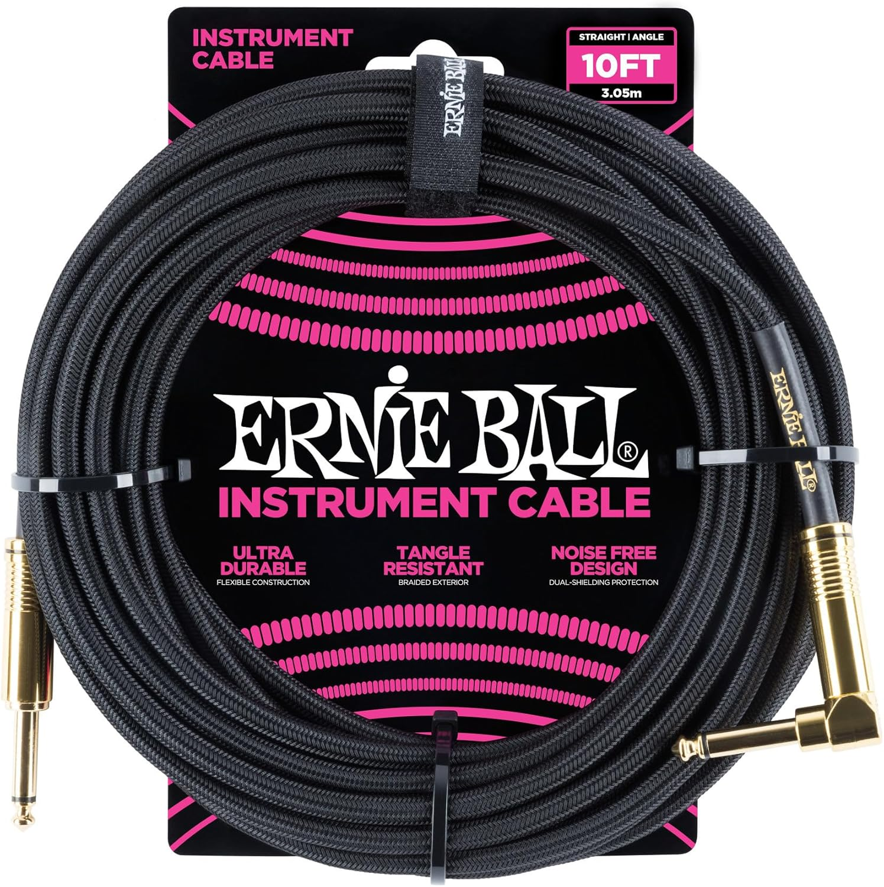

Fender Cable 10ft
- Los cables Fender Professional Series, confiables y flexibles para la carretera, cuentan con un calibre grueso con componentes de alta calidad que retienen su tono de manera transparente sin estorbar.
Q 204.00
Amazon Basics TS
- Ideal para conectar una guitarra eléctrica, bajo o teclado a un amplificador o sistema PA
- Conductor central de cobre libre de oxígeno (OFC) de 23 AWG para mejorar la claridad de la señal
Q 97.00

Ernie Ball - Cable trenzado 10ft
- 99.95% de cobre sin oxígeno para resistir la corrosión
- La protección doble y los conductores dobles proporcionan durabilidad y un tono claro y fiable.
- El revestimiento exterior trenzado es flexible y resistente a los enredos
Q 244.00